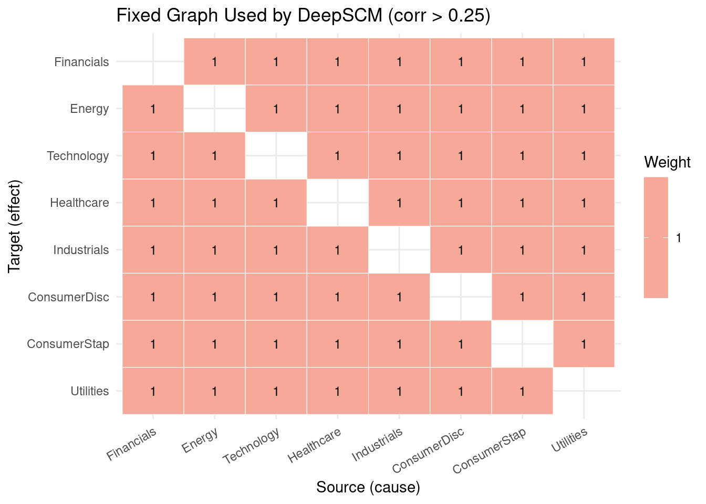
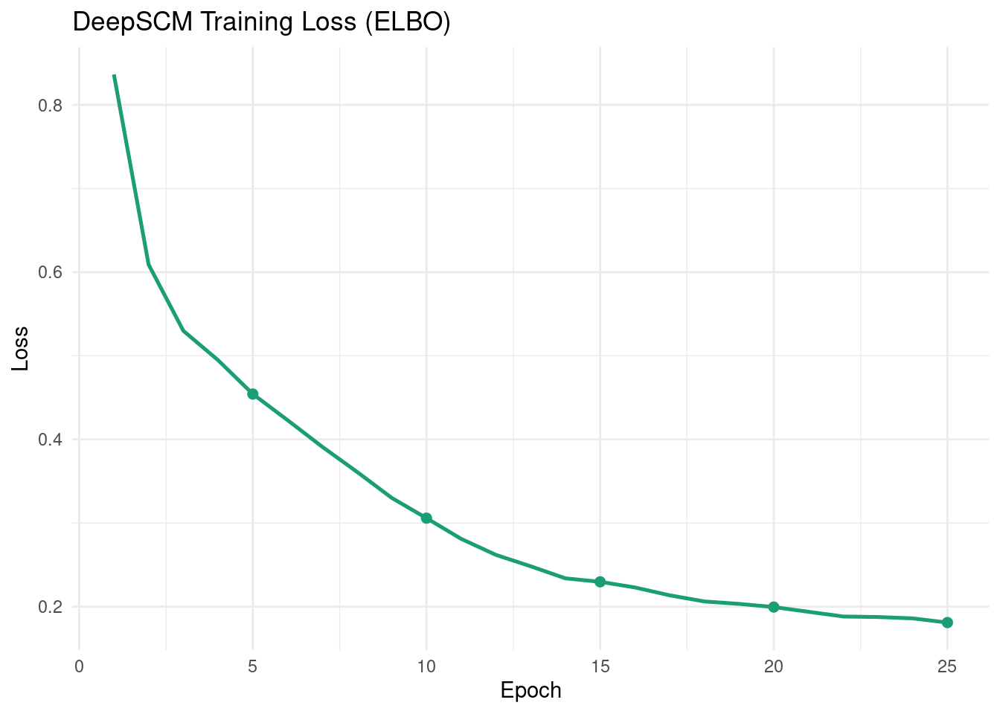
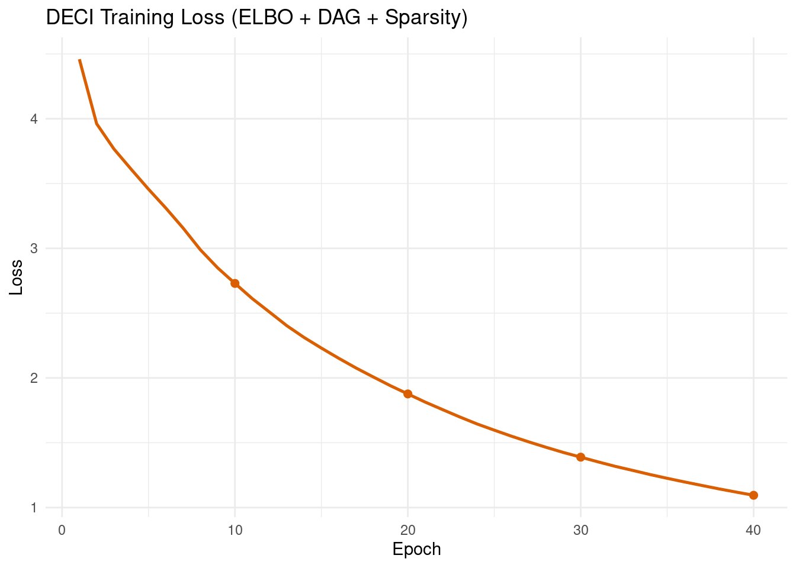
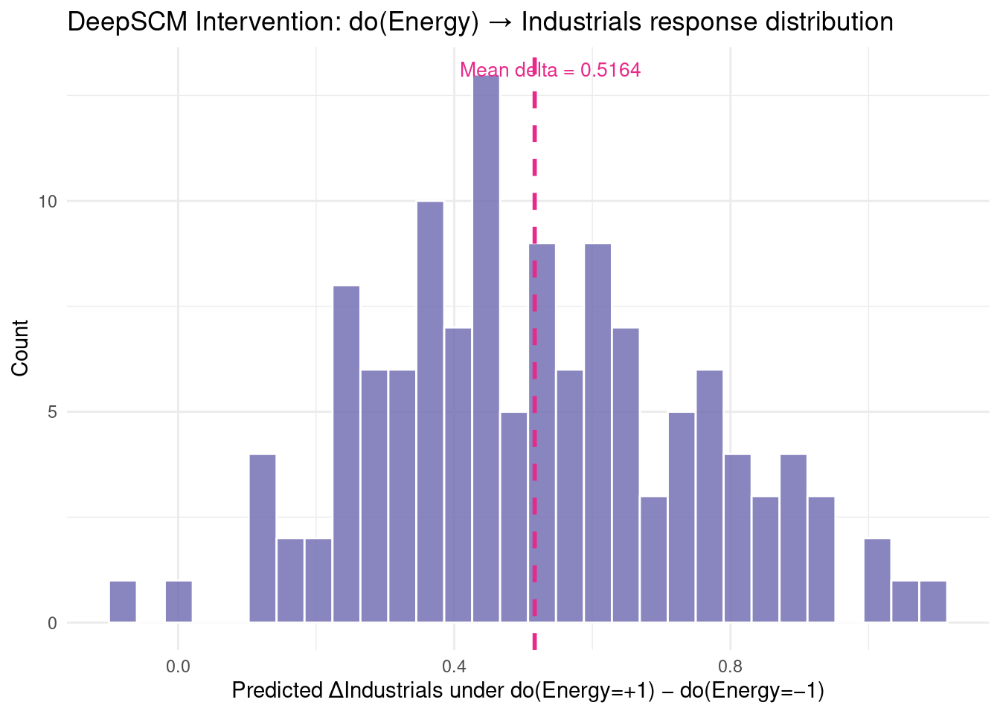
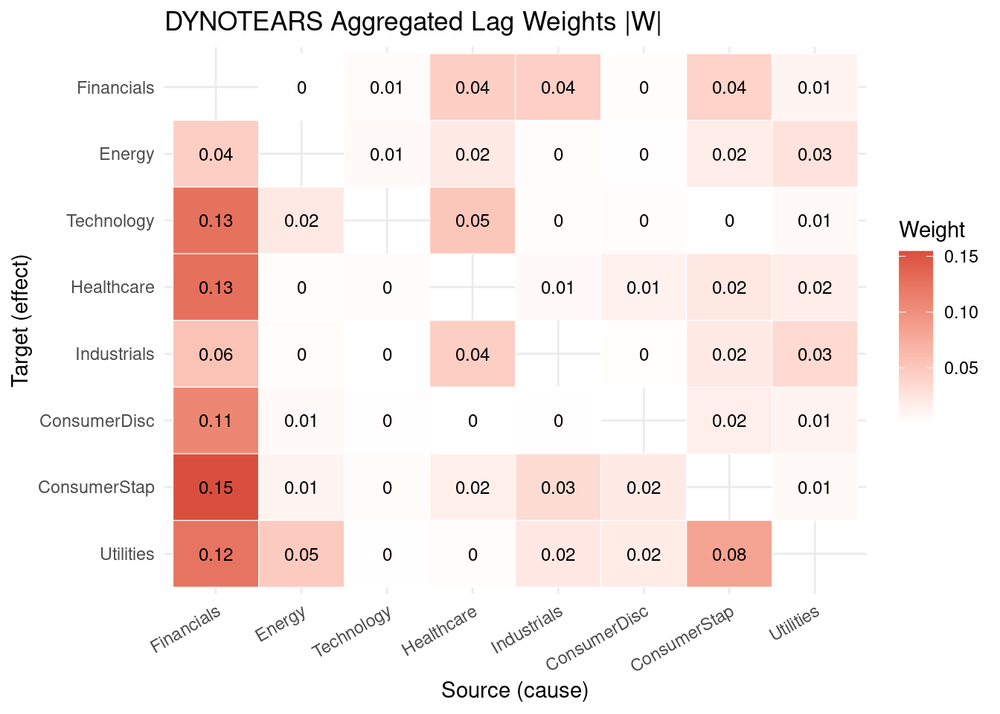
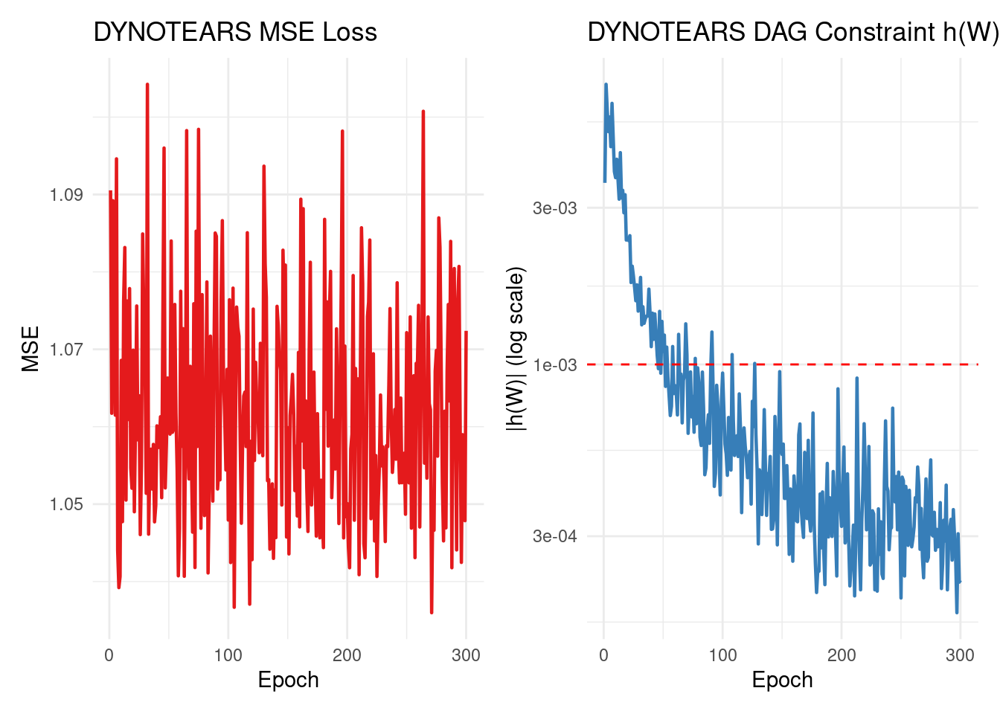
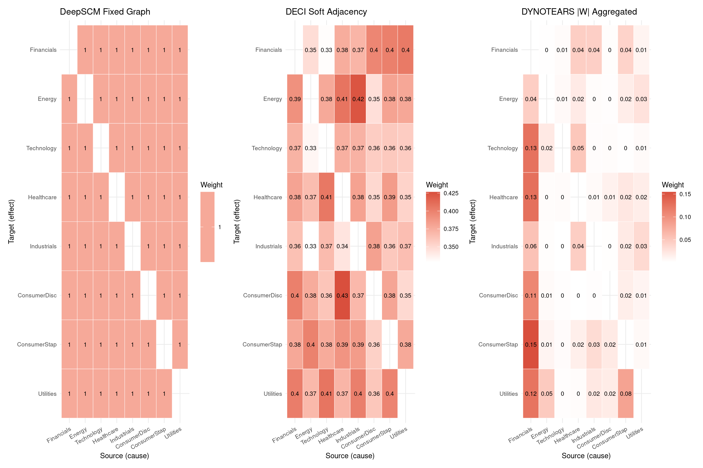
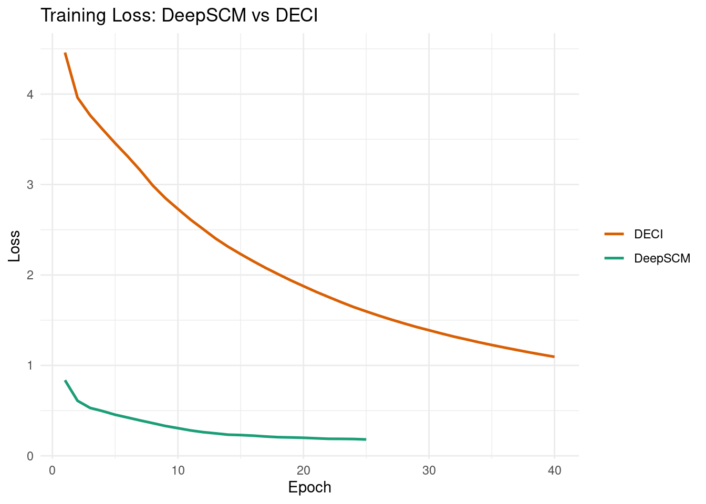
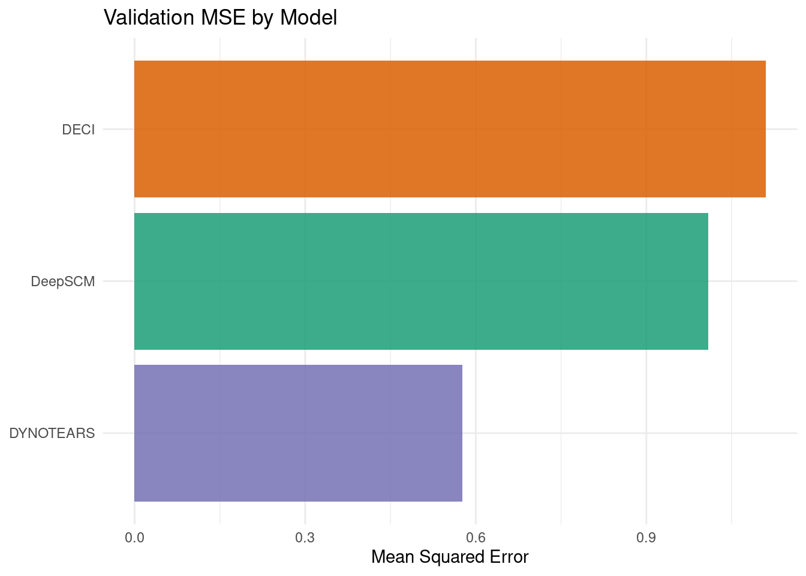

packages <- c(
'tidyverse',
'plyr',
'RCausalML',
'torch',
'tidyquant',
'reshape2',
'scales',
'patchwork',
'igraph'
)Structural Causal Models (SCMs) with Deep Components
A Structural Causal Model (SCM) is a mathematical framework for representing cause-and-effect relationships in a system. Formally, an SCM is defined as \(\mathcal{M} = (\mathbf{S}, P(\mathbf{U}))\) with structural equations:
\[X_i = f_i(\mathrm{Pa}(X_i),\, U_i),\]
where \(\mathrm{Pa}(X_i)\) denotes the causal parents of \(X_i\) in the directed acyclic graph (DAG), and \(U_i\) are independent exogenous noise variables.
SCMs support Pearl’s three-rung Ladder of Causation:
- Association: \(P(Y \mid X = x)\) — observational queries.
- Intervention: \(P(Y \mid do(X = x))\) — effect of external manipulation.
- Counterfactual: \(P(Y_x \mid X = x', Y = y')\) — what would have happened under an alternate scenario.
Deep SCMs replace hand-crafted \(f_i\) with neural networks:
\[X_i = f_{\theta_i}(\mathrm{Pa}(X_i),\, U_i).\]
In a variational deep SCM setup:
- Encoder: \(q_\phi(U \mid X)\) — infers the latent noise from observations.
- Decoder: \(p_\theta(X \mid U, G)\) — reconstructs observations from noise and graph.
- Objective: ELBO-style loss with reconstruction + KL divergence.
Overview
This notebook demonstrates three complementary deep learning approaches to structural causal modelling on multivariate time-series data (S&P 500 sector ETF log-returns):
1) DeepSCM — Fixed-Graph Structural Model
DeepSCM assumes a known adjacency matrix (here derived from a correlation heuristic) and learns nonlinear structural equations on top of that fixed graph:
\[X_t = f_\theta\!\left(X_{t-1:t-p},\, A\right) + \epsilon_t,\]
where \(A\) is fixed (not learned) and \(f_\theta\) consists of per-variable MLPs with variational noise encoders.
Why useful: Stable training when a credible prior graph is available; good baseline for intervention analysis.
Limitation: Performance depends on the quality of the fixed graph.
2) DECI — Deep End-to-End Causal Inference
DECI jointly learns both graph structure and structural equations. It uses a soft learnable adjacency matrix and enforces acyclicity via a NOTEARS-style constraint:
\[h(A) = \operatorname{tr}(e^{A \circ A}) - d = 0.\]
The objective combines reconstruction, KL divergence, DAG regularization, and sparsity:
\[\mathcal{L} = \mathcal{L}_{\text{recon}} + \lambda_{\text{KL}}\,\text{KL} + \lambda_{\text{DAG}}\,h(A) + \lambda_{\text{sparse}}\|A\|_1.\]
Why useful: Learns structure and mechanism together; produces interpretable weighted causal graphs.
Limitation: Hyperparameter-sensitive; optimization can be expensive.
3) DYNOTEARS — Lagged DAG-Constrained Discovery
DYNOTEARS extends NOTEARS-style optimization to time-series causal discovery with explicit lag structure:
\[X_t = W^{(0)}X_t + \sum_{k=1}^{p} W^{(k)} X_{t-k} + \epsilon_t,\]
where \(W^{(0)}\) captures instantaneous effects and \(W^{(k)}\) captures directed lag-\(k\) effects. Acyclicity is imposed via a smooth constraint on the aggregated weight matrix:
\[\min_{\{W^{(k)}\}} \mathcal{L}_{\text{recon}} + \lambda_1 \sum_{k=0}^{p} \|W^{(k)}\|_1 + \lambda_2\, h(\cdot).\]
Why useful: Explicitly separates lagged directional effects; produces interpretable causal graphs for multivariate time series.
Limitation: Sensitive to regularization and threshold settings.
Implementation in R
We use {RCausalML}’s deep_scm(), deci_model(), and dynotears() implementations (torch-backed when available) to fit all three models on S&P 500 sector ETF daily log-return data (2018–2024).
Load and Check Required Libraries
Install Missing Packages
# Install missing packages
#new_packages <- packages[!(packages %in% installed.packages()[,"Package"])]
#if(length(new_packages)) install.packages(new_packages)Verify Installation
cat("Installed packages:\n")Installed packages:print(sapply(packages, requireNamespace, quietly = TRUE))tidyverse plyr RCausalML torch tidyquant reshape2 scales patchwork
TRUE TRUE TRUE TRUE TRUE TRUE TRUE TRUE
igraph
TRUE Load Required Libraries
# When rendering from package root, use local RCausalML
if (file.exists("DESCRIPTION") && requireNamespace("devtools", quietly = TRUE)) {
try(devtools::load_all(".", quiet = TRUE), silent = TRUE)
}
invisible(lapply(packages, function(pkg) {
suppressPackageStartupMessages(library(pkg, character.only = TRUE))
}))set.seed(42)
device_use <- NULL
if (requireNamespace("torch", quietly = TRUE)) {
device_use <- if (torch::cuda_is_available()) "cuda" else "cpu"
torch::torch_manual_seed(42)
}
cat(sprintf("Using device: %s\n", device_use))Using device: cudaData Loading and Preprocessing
This section downloads S&P 500 sector ETF prices (the same universe used in the Neural Granger Causality notebook), converts them to standardized log-returns, and builds lagged input/output arrays for training.
Note: If online market data is unavailable, the notebook automatically falls back to synthetic demo data so all downstream cells remain runnable.
TICKERS <- c(
"XLF" = "Financials",
"XLE" = "Energy",
"XLK" = "Technology",
"XLV" = "Healthcare",
"XLI" = "Industrials",
"XLY" = "ConsumerDisc",
"XLP" = "ConsumerStap",
"XLU" = "Utilities"
)
# Download close prices via tidyquant (Yahoo Finance backend)
fetch_close_prices <- function(tickers, start = "2018-01-01", end = "2024-01-01") {
tryCatch({
raw <- tidyquant::tq_get(names(tickers), get = "stock.prices",
from = start, to = end, complete_cases = TRUE)
if (is.null(raw) || nrow(raw) == 0) return(NULL)
raw |>
dplyr::select(symbol, date, adjusted) |>
tidyr::pivot_wider(names_from = symbol, values_from = adjusted) |>
dplyr::arrange(date) |>
tidyr::drop_na()
}, error = function(e) NULL)
}
close_wide <- fetch_close_prices(TICKERS)
if (is.null(close_wide) || nrow(close_wide) < 30) {
message("Warning: market data unavailable; using synthetic demo data.")
set.seed(42)
n_steps <- 1400L
base <- matrix(rnorm(n_steps * length(TICKERS), 0, 0.01),
nrow = n_steps, ncol = length(TICKERS))
for (i in seq(2L, n_steps)) base[i, ] <- base[i, ] + 0.25 * base[i - 1L, ]
returns_df <- as.data.frame(base)
colnames(returns_df) <- unname(TICKERS)
data_np <- scale(base)
} else {
# Compute log-returns
price_mat <- as.matrix(close_wide[, names(TICKERS)])
log_ret <- log(price_mat[-1L, ] / price_mat[-nrow(price_mat), ])
colnames(log_ret) <- unname(TICKERS[colnames(price_mat)])
returns_df <- as.data.frame(log_ret)
data_np <- scale(log_ret)
}
VAR_NAMES <- colnames(data_np)
d <- ncol(data_np)
Tt <- nrow(data_np)
cat(sprintf("d=%d variables, T=%d\n", d, Tt))d=8 variables, T=1508LAG <- 5L
# Build 3-D array (N x lag x d) of lagged windows
build_lag_dataset <- function(data, lag) {
N <- nrow(data) - lag
x_seq <- array(NA_real_, dim = c(N, lag, ncol(data)))
y_mat <- matrix(NA_real_, nrow = N, ncol = ncol(data))
for (t in seq_len(N)) {
x_seq[t, , ] <- data[t:(t + lag - 1L), , drop = FALSE]
y_mat[t, ] <- data[t + lag, ]
}
list(x_seq = x_seq, y_mat = y_mat)
}
lag_data <- build_lag_dataset(data_np, LAG)
X_seq <- lag_data$x_seq
Y_mat <- lag_data$y_mat
split <- floor(0.8 * nrow(X_seq))
X_tr <- X_seq[seq_len(split), , ]
X_val <- X_seq[(split + 1L):nrow(X_seq), , ]
Y_tr <- Y_mat[seq_len(split), ]
Y_val <- Y_mat[(split + 1L):nrow(Y_mat), ]
cat(sprintf("Train: (%d, %d, %d) Val: (%d, %d, %d)\n",
dim(X_tr)[1], dim(X_tr)[2], dim(X_tr)[3],
dim(X_val)[1], dim(X_val)[2], dim(X_val)[3]))Train: (1202, 5, 8) Val: (301, 5, 8)Utilities and Model Definitions
Acyclicity Penalty and Graph Threshold Helpers
The NOTEARS acyclicity penalty provides a continuous, differentiable condition that equals zero if and only if a matrix encodes a DAG:
\[h(A) = \operatorname{tr}(e^{A \odot A}) - d.\]
In R (with the torch package), this is computed as:
# Acyclicity penalty h(A) = tr(expm(A*A)) - d [scalar, on CPU]
acyclicity_penalty_r <- function(A_mat) {
if (requireNamespace("torch", quietly = TRUE)) {
A_t <- torch::torch_tensor(A_mat, dtype = torch::torch_float32())
val <- (torch::torch_matrix_exp(A_t * A_t))$trace()$item() - nrow(A_mat)
return(val)
}
# Fallback: spectral-radius approximation
ev <- Re(eigen(A_mat * A_mat, only.values = TRUE)$values)
sum(exp(ev)) - nrow(A_mat)
}
# Threshold a soft adjacency matrix to binary
threshold_adjacency <- function(A_soft, threshold = 0.35) {
A_bin <- (abs(A_soft) > threshold) * 1.0
diag(A_bin) <- 0.0
A_bin
}Fixed-Graph Heuristic (Correlation)
DeepSCM uses a fixed adjacency matrix. Here we derive it from the absolute correlation among the standardized log-return series:
# Use the last lag slice (contemporaneous snapshot) for correlation
corr_mat <- abs(cor(data_np))
diag(corr_mat) <- 0.0
A_fixed <- (corr_mat > 0.25) * 1.0
diag(A_fixed) <- 0.0
cat("Fixed adjacency (correlation > 0.25):\n")Fixed adjacency (correlation > 0.25):print(A_fixed) Financials Energy Technology Healthcare Industrials ConsumerDisc
Financials 0 1 1 1 1 1
Energy 1 0 1 1 1 1
Technology 1 1 0 1 1 1
Healthcare 1 1 1 0 1 1
Industrials 1 1 1 1 0 1
ConsumerDisc 1 1 1 1 1 0
ConsumerStap 1 1 1 1 1 1
Utilities 1 1 1 1 1 1
ConsumerStap Utilities
Financials 1 1
Energy 1 1
Technology 1 1
Healthcare 1 1
Industrials 1 1
ConsumerDisc 1 1
ConsumerStap 0 1
Utilities 1 0plot_scm_dag(A_fixed, VAR_NAMES, "Fixed Graph Used by DeepSCM (corr > 0.25)")
Train DeepSCM (Fixed Graph)
This cell trains the DeepSCM model using the fixed correlation-derived adjacency matrix.
Each variable’s structural equation is a small MLP conditioned on its graph-parents plus a per-variable latent noise vector inferred by a variational encoder. Training minimises a reconstruction loss plus a KL regularisation term (ELBO objective).
deep_scm_fit <- deep_scm(
x_seq = X_tr,
adjacency = A_fixed,
lag = LAG,
latent_dim = 4L,
hidden = 64L,
n_epochs = 25L,
batch_size = 64L,
lr = 1e-3,
lam_kl = 0.05,
verbose = TRUE,
device = device_use
)
cat("DeepSCM training finished.\n")DeepSCM training finished.cat(sprintf("Final training loss: %.4f\n",
tail(deep_scm_fit$train_losses, 1)))Final training loss: 0.1810DeepSCM Training Curve
loss_df_scm <- data.frame(
epoch = seq_along(deep_scm_fit$train_losses),
loss = deep_scm_fit$train_losses
)
ggplot(loss_df_scm, aes(x = epoch, y = loss)) +
geom_line(colour = "#1b9e77", linewidth = 0.9) +
geom_point(data = loss_df_scm[loss_df_scm$epoch %% 5 == 0, ],
colour = "#1b9e77", size = 2) +
labs(
title = "DeepSCM Training Loss (ELBO)",
x = "Epoch",
y = "Loss"
) +
theme_minimal()
Train DECI and Inspect Learned Graph
This cell trains the DECI model which jointly discovers the causal adjacency matrix and the structural equations. After training, the soft adjacency is thresholded to obtain a binary DAG.
deci_fit <- deci_model(
x_seq = X_tr,
lag = LAG,
latent_dim = 8L,
hidden = 64L,
n_epochs = 40L,
batch_size = 64L,
lr = 1e-3,
lam_kl = 0.05,
lam_dag = 1.0,
lam_sparse = 0.01,
threshold = 0.35,
verbose = TRUE,
device = device_use
)
cat("DECI training finished.\n")DECI training finished.cat(sprintf("Final training loss: %.4f\n",
tail(deci_fit$train_losses, 1)))Final training loss: 1.0947DECI Training Curve
loss_df_deci <- data.frame(
epoch = seq_along(deci_fit$train_losses),
loss = deci_fit$train_losses
)
ggplot(loss_df_deci, aes(x = epoch, y = loss)) +
geom_line(colour = "#d95f02", linewidth = 0.9) +
geom_point(data = loss_df_deci[loss_df_deci$epoch %% 10 == 0, ],
colour = "#d95f02", size = 2) +
labs(
title = "DECI Training Loss (ELBO + DAG + Sparsity)",
x = "Epoch",
y = "Loss"
) +
theme_minimal()
DECI Learned Adjacency
A_soft <- deci_fit$A_soft
A_bin <- deci_fit$A_binary
rownames(A_soft) <- VAR_NAMES
colnames(A_soft) <- VAR_NAMES
cat(sprintf("Approx h(A_soft): %.6f\n", acyclicity_penalty_r(A_soft)))Approx h(A_soft): 0.768062cat(sprintf("Edges in thresholded graph (tau=%.2f): %d\n",
deci_fit$threshold, sum(A_bin > 0)))Edges in thresholded graph (tau=0.35): 50plot_scm_dag(A_soft, VAR_NAMES, "DECI Soft Adjacency (learned)")
plot_scm_dag(A_bin, VAR_NAMES, "DECI Thresholded Adjacency (binary DAG)")
Intervention Analysis and ATE Estimation
Intervention analysis assesses the effects of actively changing (intervening on) one or more variables within a system. A do-operation \(do(X = x)\) forces a variable to take on a specific value and evaluates how this change propagates through the causal graph to affect other variables.
The Average Treatment Effect (ATE) measures the expected difference in an outcome variable due to the intervention:
\[\text{ATE} = \mathbb{E}[Y \mid do(X = 1)] - \mathbb{E}[Y \mid do(X = -1)].\]
source_name <- "Energy"
target_name <- "Industrials"
source_idx <- which(VAR_NAMES == source_name)
target_idx <- which(VAR_NAMES == target_name)
# DECI ATE via Monte-Carlo averaging over the decoder
ate_val <- ate_deci(
object = deci_fit,
newdata = X_val,
source = source_idx,
target = target_idx,
do_values = c(-1.0, 1.0),
n_samples = min(200L, nrow(X_val))
)
cat(sprintf("Estimated ATE of do(%s) on %s (DECI): %.4f\n",
source_name, target_name, ate_val))Estimated ATE of do(Energy) on Industrials (DECI): 0.0012# DeepSCM intervention: compare predicted target under low vs. high intervention
n_int <- min(128L, nrow(X_val))
int_result <- intervene_deep_scm(
object = deep_scm_fit,
newdata = X_val[seq_len(n_int), , ],
target_var = source_idx,
do_values = c(-1.0, 1.0)
)
scm_delta <- int_result$delta[target_idx]
cat(sprintf("DeepSCM intervention delta on %s: %.4f\n", target_name, scm_delta))DeepSCM intervention delta on Industrials: 0.5164Intervention Effect Distribution
diff_vec <- int_result$pred_high[, target_idx] - int_result$pred_low[, target_idx]
ggplot(data.frame(delta = diff_vec), aes(x = delta)) +
geom_histogram(bins = 30, fill = "#7570b3", colour = "white", alpha = 0.85) +
geom_vline(xintercept = mean(diff_vec), colour = "#e7298a", linewidth = 1,
linetype = "dashed") +
annotate("text",
x = mean(diff_vec) + 0.02 * diff(range(diff_vec)),
y = Inf, vjust = 2,
label = sprintf("Mean delta = %.4f", mean(diff_vec)),
colour = "#e7298a", size = 3.5) +
labs(
title = sprintf(
"DeepSCM Intervention: do(%s) → %s response distribution",
source_name, target_name
),
x = sprintf("Predicted Δ%s under do(%s=+1) − do(%s=−1)",
target_name, source_name, source_name),
y = "Count"
) +
theme_minimal()
DYNOTEARS — DAG-Constrained Structure Learning
DYNOTEARS extends NOTEARS-style continuous optimization to time-series causal discovery by modelling lagged dependencies while enforcing acyclicity on the learned structure.
For lag order \(p\), the formulation is:
\[X_t = W^{(0)}X_t + \sum_{k=1}^{p} W^{(k)} X_{t-k} + \epsilon_t,\]
where \(W^{(0)}\) captures same-time (instantaneous) effects and \(W^{(k)}\) captures directed lag-\(k\) effects. The augmented-Lagrangian objective penalizes reconstruction error, L1 sparsity, and DAG violation simultaneously.
Why useful in practice:
- Produces interpretable directed graphs with explicit lag structure.
- Provides DAG-regularized structure learning in a differentiable framework.
- Useful when structure-learning rigor is needed beyond purely predictive models.
cat("Training DYNOTEARS ...\n")Training DYNOTEARS ...dyno_fit <- dynotears(
x_seq = X_tr,
y_mat = Y_tr,
lag = LAG,
n_epochs = 300L,
batch_size = 256L,
lr = 3e-3,
lambda_l1 = 0.02,
rho_init = 1.0,
threshold = 0.08,
verbose = TRUE,
device = device_use
)
A_dynotears <- dyno_fit$A_binary
W_agg <- dyno_fit$W_agg
rownames(A_dynotears) <- VAR_NAMES
colnames(A_dynotears) <- VAR_NAMES
cat("\nDYNOTEARS recovered adjacency:\n")
DYNOTEARS recovered adjacency:print(A_dynotears) Financials Energy Technology Healthcare Industrials ConsumerDisc
Financials 0 0 0 0 0 0
Energy 0 0 0 0 0 0
Technology 1 0 0 0 0 0
Healthcare 1 0 0 0 0 0
Industrials 0 0 0 0 0 0
ConsumerDisc 1 0 0 0 0 0
ConsumerStap 1 0 0 0 0 0
Utilities 1 0 0 0 0 0
ConsumerStap Utilities
Financials 0 0
Energy 0 0
Technology 0 0
Healthcare 0 0
Industrials 0 0
ConsumerDisc 0 0
ConsumerStap 0 0
Utilities 1 0plot_scm_dag(W_agg, VAR_NAMES, "DYNOTEARS Aggregated Lag Weights |W|")
DYNOTEARS Training Dynamics
dt_loss_df <- data.frame(
epoch = seq_along(dyno_fit$train_losses),
mse = dyno_fit$train_losses,
dag_h = dyno_fit$dag_vals
)
p_mse <- ggplot(dt_loss_df, aes(x = epoch, y = mse)) +
geom_line(colour = "#e41a1c", linewidth = 0.8) +
labs(title = "DYNOTEARS MSE Loss", x = "Epoch", y = "MSE") +
theme_minimal()
p_dag <- ggplot(dt_loss_df, aes(x = epoch, y = dag_h)) +
geom_line(colour = "#377eb8", linewidth = 0.8) +
geom_hline(yintercept = 1e-3, colour = "red", linetype = "dashed") +
scale_y_log10() +
labs(title = "DYNOTEARS DAG Constraint h(W)", x = "Epoch",
y = "|h(W)| (log scale)") +
theme_minimal()
p_mse + p_dag
Graph Recovery Evaluation and Visual Comparison
This section compares the causal graphs produced by all three models. Since no ground-truth DAG is available for financial return data, we report graph statistics (density, in/out degree) and provide side-by-side visual comparisons.
Graph Statistics
graph_stats_r <- function(A_bin, name = "") {
g <- igraph::graph_from_adjacency_matrix(
A_bin, mode = "directed", weighted = NULL, diag = FALSE
)
d_n <- igraph::gorder(g)
e_n <- igraph::gsize(g)
dens <- if (d_n > 1) e_n / (d_n * (d_n - 1)) else 0.0
data.frame(
model = name,
nodes = d_n,
edges = e_n,
density = round(dens, 4),
is_dag = igraph::is_dag(g),
max_in_degree = if (d_n > 0) max(igraph::degree(g, mode = "in")) else 0L,
max_out_degree = if (d_n > 0) max(igraph::degree(g, mode = "out")) else 0L
)
}
method_graphs <- list(
"DeepSCM (Fixed)" = A_fixed,
"DECI (Thresholded)" = A_bin,
"DYNOTEARS" = A_dynotears
)
stats_all <- do.call(rbind, lapply(names(method_graphs), function(nm) {
graph_stats_r((method_graphs[[nm]] > 0) * 1L, nm)
}))
rownames(stats_all) <- NULL
cat("Graph statistics:\n")Graph statistics:print(stats_all) model nodes edges density is_dag max_in_degree max_out_degree
1 DeepSCM (Fixed) 8 56 1.0000 FALSE 7 7
2 DECI (Thresholded) 8 50 0.8929 FALSE 7 7
3 DYNOTEARS 8 6 0.1071 TRUE 5 2Adjacency Heatmap Comparison
plot_comparison_heatmaps <- function(mats, names_vec, var_names) {
plots <- lapply(seq_along(mats), function(i) {
A <- as.matrix(mats[[i]])
diag(A) <- NA_real_
rownames(A) <- var_names
colnames(A) <- var_names
df <- reshape2::melt(A, na.rm = TRUE)
colnames(df) <- c("Target", "Source", "Weight")
df$Target <- factor(df$Target, levels = rev(var_names))
df$Source <- factor(df$Source, levels = var_names)
ggplot(df, aes(x = Source, y = Target, fill = Weight)) +
geom_tile(colour = "white") +
geom_text(aes(label = round(Weight, 2)), size = 2.6, colour = "black") +
scale_fill_gradient(low = "white", high = "#D94F3D",
na.value = "grey90", name = "Weight") +
labs(title = names_vec[[i]], x = "Source (cause)", y = "Target (effect)") +
theme_minimal(base_size = 9) +
theme(axis.text.x = element_text(angle = 30, hjust = 1))
})
do.call(patchwork::wrap_plots, c(plots, list(ncol = 3)))
}
heatmap_mats <- list(A_fixed, A_soft, W_agg)
heatmap_names <- list("DeepSCM Fixed Graph", "DECI Soft Adjacency",
"DYNOTEARS |W| Aggregated")
plot_comparison_heatmaps(heatmap_mats, heatmap_names, VAR_NAMES)
Causal Graph Network Diagrams
draw_causal_igraph <- function(A_bin, title, var_names,
node_colour = "steelblue") {
A_bin <- (as.matrix(A_bin) > 0) * 1L
diag(A_bin) <- 0L
g <- igraph::graph_from_adjacency_matrix(
A_bin, mode = "directed", weighted = NULL, diag = FALSE
)
igraph::V(g)$name <- var_names
igraph::V(g)$color <- node_colour
igraph::V(g)$label <- var_names
igraph::V(g)$size <- 28
igraph::V(g)$label.color <- "white"
igraph::V(g)$label.cex <- 0.8
igraph::E(g)$color <- "grey50"
igraph::E(g)$arrow.size <- 0.6
old_par <- par(mar = c(0, 0, 2, 0))
plot(g,
layout = igraph::layout_in_circle(g),
main = title,
vertex.frame.color = "white")
par(old_par)
}
par(mfrow = c(1, 3))
draw_causal_igraph(A_fixed, "DeepSCM (Fixed Graph)", VAR_NAMES, "steelblue")
draw_causal_igraph(A_bin, "DECI (Thresholded)", VAR_NAMES, "darkorange")
draw_causal_igraph(A_dynotears, "DYNOTEARS", VAR_NAMES, "mediumpurple")
par(mfrow = c(1, 1))Training Loss Comparison
max_ep_scm <- length(deep_scm_fit$train_losses)
max_ep_deci <- length(deci_fit$train_losses)
df_losses <- bind_rows(
data.frame(epoch = seq_len(max_ep_scm),
loss = deep_scm_fit$train_losses,
model = "DeepSCM"),
data.frame(epoch = seq_len(max_ep_deci),
loss = deci_fit$train_losses,
model = "DECI")
)
ggplot(df_losses, aes(x = epoch, y = loss, colour = model)) +
geom_line(linewidth = 0.9) +
scale_colour_manual(values = c("DeepSCM" = "#1b9e77", "DECI" = "#d95f02")) +
labs(
title = "Training Loss: DeepSCM vs DECI",
x = "Epoch",
y = "Loss",
colour = NULL
) +
theme_minimal()
Model Validation: Prediction Error on Held-Out Data
pred_scm <- predict(deep_scm_fit, newdata = X_val)
pred_deci <- predict(deci_fit, newdata = X_val)
pred_dyno <- predict(dyno_fit, newdata = X_val)
mse_scm <- mean((pred_scm - Y_val)^2)
mse_deci <- mean((pred_deci - Y_val)^2)
mse_dyno <- mean((pred_dyno - Y_val)^2)
val_df <- data.frame(
model = c("DeepSCM", "DECI", "DYNOTEARS"),
val_mse = c(mse_scm, mse_deci, mse_dyno)
)
cat("Validation MSE (next-step reconstruction):\n")Validation MSE (next-step reconstruction):print(val_df) model val_mse
1 DeepSCM 1.0088179
2 DECI 1.1097789
3 DYNOTEARS 0.5761586ggplot(val_df, aes(x = reorder(model, val_mse), y = val_mse, fill = model)) +
geom_col(show.legend = FALSE, alpha = 0.85) +
scale_fill_manual(values = c(
"DeepSCM" = "#1b9e77",
"DECI" = "#d95f02",
"DYNOTEARS" = "#7570b3"
)) +
coord_flip() +
labs(
title = "Validation MSE by Model",
x = NULL,
y = "Mean Squared Error"
) +
theme_minimal()
Notes and Extensions
- This notebook is a pedagogical implementation of three complementary deep causal discovery approaches on real-world time-series data.
- The learned adjacencies are soft during optimization; thresholding is used for interpretability and should be treated with caution for downstream causal claims.
- Hyperparameters (
LAG, graph threshold, DAG/sparsity penalties) strongly affect the discovered structure; domain knowledge and sensitivity analysis are essential for robust conclusions. - For stronger causal claims, combine with domain priors and interventional validation.
- Possible extensions:
- Augmented Lagrangian DAG optimization (tighter acyclicity enforcement).
- TARNet / Dragonnet treatment heads that consume the parents of a target variable from the learned graph.
- Non-linear SEM decoders with normalizing flows for richer structural equations.
- Bootstrap uncertainty on the adjacency matrix.
Summary and Conclusions
In this notebook, we explored three deep learning-based approaches to structural causal modelling on S&P 500 sector ETF multivariate time-series:
DeepSCM uses a fixed correlation-derived adjacency matrix and learns nonlinear structural equations via variational per-variable noise encoders. Its ELBO training is stable and fast, making it a useful baseline when a credible prior graph is available.
DECI jointly learns both the causal graph structure and structural equations using a NOTEARS acyclicity penalty \(h(A) = \operatorname{tr}(e^{A \odot A}) - d\) and an ELBO-style variational objective. The soft adjacency matrix can be thresholded to obtain an interpretable DAG.
DYNOTEARS extends NOTEARS to the time-series setting with explicit lag-specific weight matrices \(W^{(k)}\), enforcing acyclicity via an augmented-Lagrangian scheme. Its output is a multi-lag directed graph useful for temporal influence analysis.
Key takeaways:
- Learning causal structure from time series is feasible with deep methods and provides interpretable models of temporal influence.
- Deep SCMs enable interventional queries (\(do\)-operations) supporting actionable insights in economics, finance, and genomics.
- The NOTEARS acyclicity constraint — and its augmented-Lagrangian extension — is a unifying building block across all three methods.
- Thresholding, regularization, and domain knowledge are crucial for meaningful graphical outputs; no single set of hyperparameters is universally optimal.
- {RCausalML}’s
deep_scm(),deci_model(), anddynotears()provide clean torch-backed interfaces for all three methods with minimal setup.
Resources
Primary references
- DECI (NeurIPS 2022): Deep End-to-End Causal Inference — the primary reference for the joint graph + SEM learning approach.
- DYNOTEARS: Structure Learning from Time Series with False Discovery Control — time-series extension of NOTEARS with lag structure.
- NOTEARS: DAGs with NO TEARS: Continuous Optimization for Structure Learning — the acyclicity characterization \(h(W)=\mathrm{tr}(e^{W\odot W})-d\) used in all methods.
Background texts
- Causality (Judea Pearl): Causality: Models, Reasoning and Inference — definitive reference for SCMs and Pearl’s hierarchy.
- Elements of Causal Inference (Peters, Janzing & Schölkopf): MIT Press — rigorous treatment of SCMs and identifiability.
- The Book of Why (J. Pearl & D. Mackenzie) — accessible introduction to causal reasoning.
Software and datasets
- DoWhy: github.com/py-why/dowhy — Python library for causal inference.
- R torch: https://torch.mlverse.org/ — PyTorch bindings for R used by {RCausalML}.
- tidyquant: https://business-science.github.io/tidyquant/ — tidy finance data retrieval.
- awesome-causal-inference: github.com/imirzadeh/awesome-causal-inference — curated resource list.
Companion notebooks in this series
05-04-01-DeepCausalML-timeseries-neural-granger-cusuality-r.qmd— Neural Granger Causality (cMLP, cLSTM, SRU, NRI) on the same sector ETF universe.05-03-05-DeepCausalML-causal-structural-learning-regularization-CASTLE-r.qmd— CASTLE: simultaneous supervised prediction and causal graph discovery.05-03-04-DeepCausalML-DAGMA-NoCurl-r.qmd— DAGMA and DAG-NoCurl: acyclicity via log-det and curl-free constraints.
Scientific Terminology for Beginners
| Term | Simple explanation | Beginner example |
|---|---|---|
| SCM (Structural Causal Model) | A mathematical description of how variables cause each other. | \(\text{Rain} \rightarrow \text{WetGrass}\) with a structural equation for each. |
| DAG (Directed Acyclic Graph) | A graph of arrows with no cycles; arrows point from cause to effect. | A flow chart with no loops. |
| Structural equation | A function that defines one variable as a (possibly nonlinear) function of its causes plus noise. | \(Y = f_\theta(X, U)\) where \(U\) is unobserved noise. |
| ELBO (Evidence Lower Bound) | A variational lower bound on the log-likelihood; optimizing it trains VAE-style models. | Training loss for variational encoders. |
| KL divergence | A measure of how different two probability distributions are. | Penalty that keeps the learned noise close to a standard normal. |
| Acyclicity constraint \(h(A)\) | A differentiable condition that is zero iff the adjacency matrix \(A\) encodes a DAG. | Acts like a “no-loop detector” during training. |
| Soft adjacency | Values in \([0, 1]\) representing edge probabilities during optimization; thresholded to 0/1 after training. | Like a fuzzy graph that gradually becomes crisp. |
| Intervention / do-operator | Setting a variable to a fixed value and observing downstream effects, bypassing its normal causes. | Giving a patient a drug regardless of their normal prescription pattern. |
| ATE (Average Treatment Effect) | Mean difference in outcome when an intervention is applied vs. not applied. | Average improvement in recovery rate due to a new treatment. |
| Augmented Lagrangian | An optimization method that enforces hard constraints (like acyclicity) through penalty terms with adaptive multipliers. | Iteratively increases the “cost” of violating the no-cycle rule. |
| Lag order \(p\) | Number of previous time steps used as predictors. | If \(p=5\), today’s value depends on the last 5 days. |